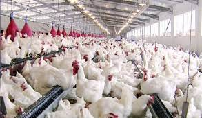

Jusqu’à présent, les politiques de modernisation de l’élevage au Sénégal se sont focalisées sur les soins à apporter au bétail. Des spécialistes estiment qu’il faut maintenant prendre en compte toute la chaîne de valeur et, surtout, stabiliser le bétail dans sa zone de prédilection.
Parole d’expert : « Qualitativement et quantitativement, au Sénégal, nous mangeons de la mauvaise viande, de la vieille carne. » L’homme qui fait cette forte affirmation semble savoir de quoi il parle, car il est le président du Conseil de l’ordre des vétérinaires. En plus, le Dr Abou Mamadou
Ainsi, le directeur de l’Élevage au ministère de l’Agriculture, le docteur Sakho, vétérinaire comme son collègue, pense que la modernisation de l’agriculture ne doit pas nécessairement en finir avec le pastoralisme, en particulier l’agropastoralisme. Le D Sakho estime que l’agropastoralisme est l’un des éléments qui fondent le dynamisme de l’élevage et de l’agriculture, et que l’on ne peut se permettre de passer l’éponge dessus, à moins de vouloir en finir avec l’élevage au Sénégal, ce qui est impensable. Le directeur de l’Élevage

À ces arguments, le docteur Touré rétorque que la production de lait et de viande a fortement baissé au Sénégal depuis les premières années de l’indépendance, signe d’une très mauvaise exploitation du secteur. Ainsi, indique t-il, « la production de viande est passée, dans notre pays, de 21kg par tête d’habitant en 1960, à 13kg en 2008 ».
Le docteur Abou Mamadou Touré a voulu organiser des États généraux de l’élevage, au mois de septembre, dans la ville de Thiès, à 75 km de la capitale Dakar. Cette rencontre, qui devait mobiliser tous les acteurs du secteur de l’élevage, pour lancer une réflexion sur son développement